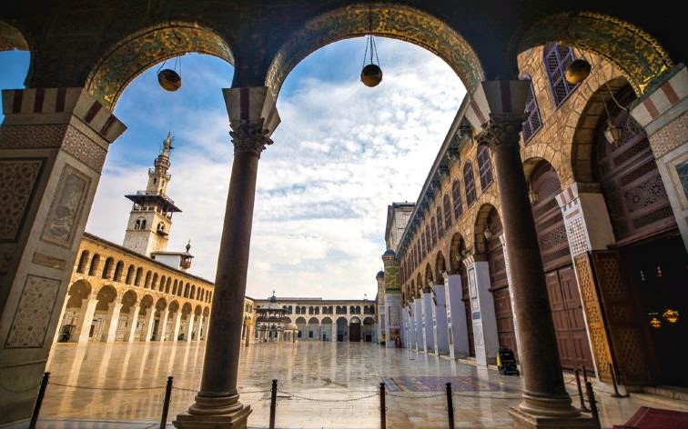
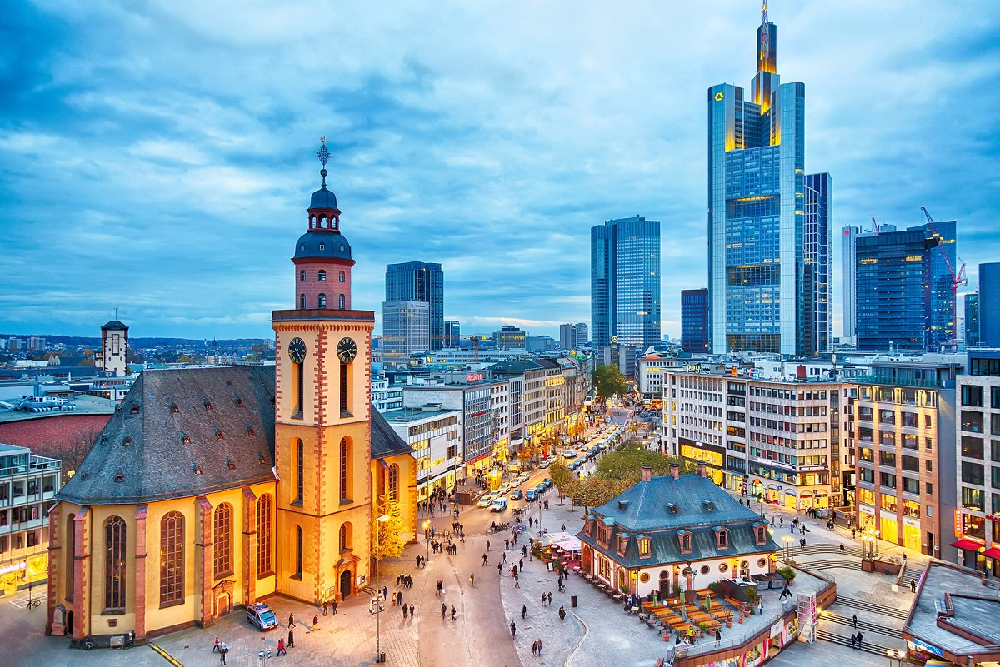
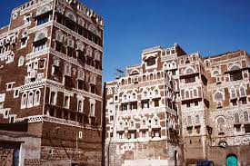
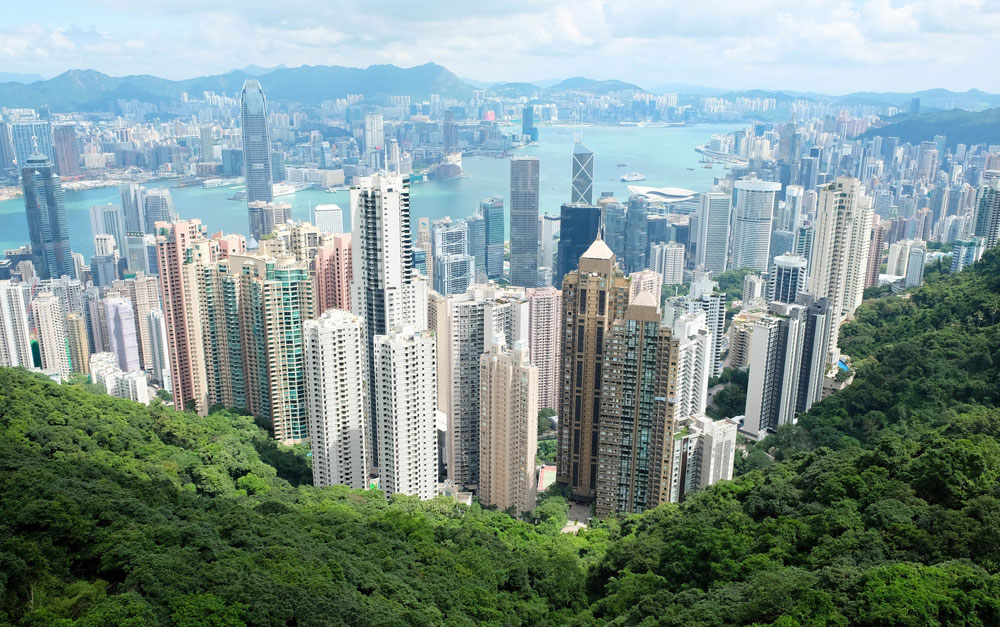
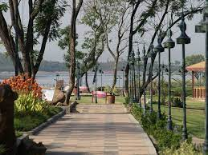
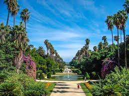
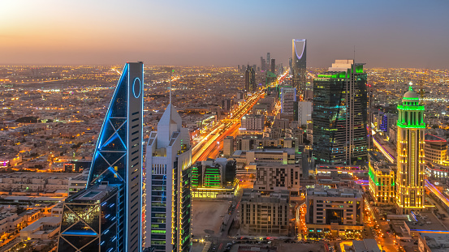
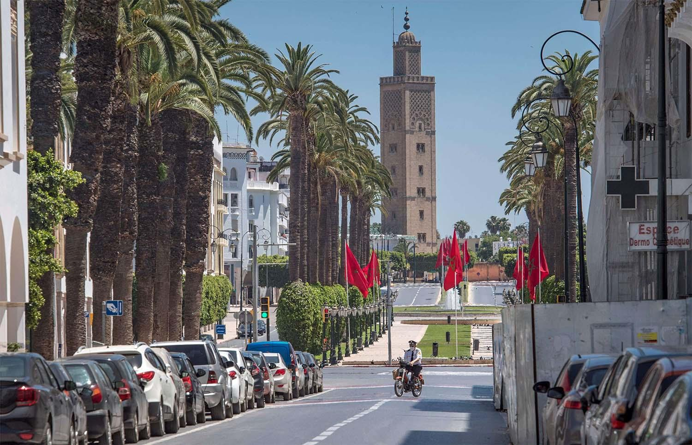

-
Foreign Service Institute (FSI)
Posted at FSI for my initial training. Training takes about 6 months depending on what your next post is. At that time a large part of the training was in Warrenton Virginia but it's all in Arlington now.
-

Islamabad
Islamabad was my first post and I met my golf-coach husband there! The second week after I arrived at post 9/11 happened and Islamabad became extremely busy.
-

Damascus
Damascus was my second post and we were able to explore a great deal of Syria because of some great English class students from the local university. They wanted to practice their English and took us along to see the ancient wonders of Syria.
-

Frankfurt
In Frankfurt I worked at the Regional Infomation Management Center as a certified IT instructor. Frankfurt is known for it's "GrünGürtel" or green belt of natural walking trails that encircle the city. Very beautiful!
-

Sanaa
Yemen was a very tense assignment. The first week that we arrived there the U.S. Embassy was directly attached and 18 people died. We went ahead and took an "authorized departure" since we didn't want to be seperated but we were back there in two months.
-

Hong Kong
Hong Kong is a very modern city but it's very crowded on the city side of the island. We had spectacular views of the city but a very small apartment. The other side of the island is a lot more relaxed.
-

Islamabad
Back to Islamabad for a second tour. It wasn't the same though. The embassy had grown tremendously in size and was in the process of going through a new embassy being constructed on the same site as the current embassy.
-

Algiers
Algiers was a great family post. I loved taking my son to both the zoos that they had there. Jardin d`Essai Zoo is certainly well worth a visit. Very beautiful!
-

Fairfax
I was accepted into the Executive Development Program which was a very intense year of training at FSI and at the National Defense University. In Fairfax we lived on a golf course which was very beautiful. Fairfax is a great city for families!
-

Riyadh
Saudi Arabia was undergoing huge changes while we were stationed there. It's a great post for families because everyone lives on the Diplomatic Quarter so the embassy is the focus of most events and everything is within walking distance.
-

Rabat
Rabat was my last post before retirement and I was only there for a year so I didn't get to see very much of Rabat especailly with COVID lockdowns. I do hope to get back someday as a tourist. The weather is great and so are the people!